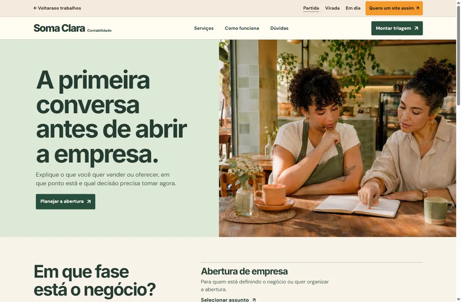

Partida
Ajuda quem está abrindo uma empresa a organizar o que já sabe e as decisões que faltam.
Abrir demonstraçãoTrês propostas para o mesmo escritório contábil. Abra uma versão para testar a triagem do seu negócio.

Ajuda quem está abrindo uma empresa a organizar o que já sabe e as decisões que faltam.
Abrir demonstraçãoMostra como preparar a mudança de contador sem perder de vista entregas, documentos e responsabilidades.
Abrir demonstraçãoColoca a triagem na abertura e transforma necessidades do mês em escolhas concretas.
Abrir demonstração